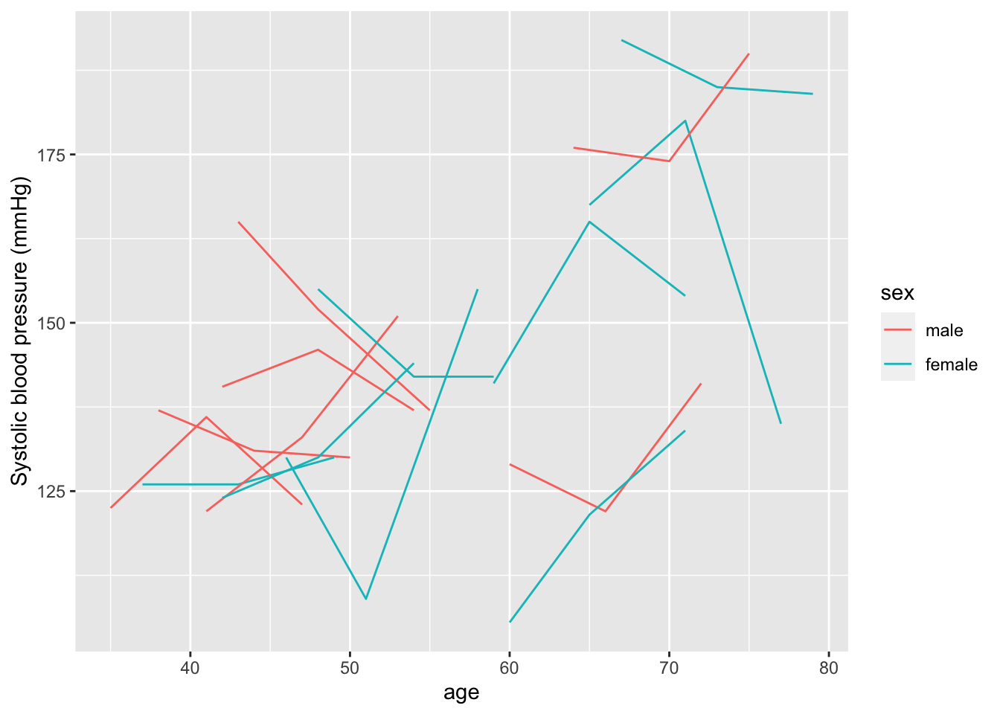
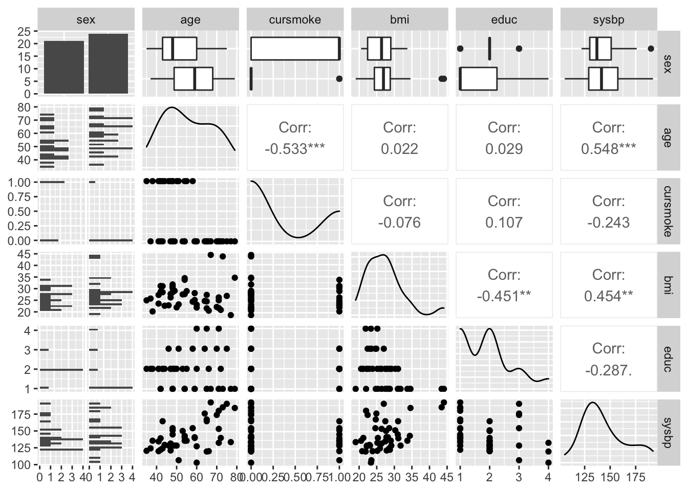
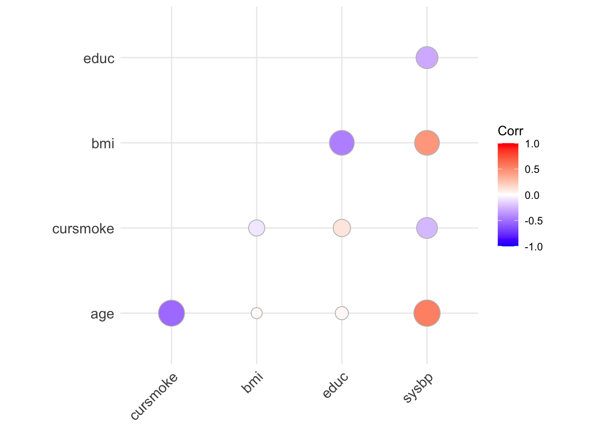
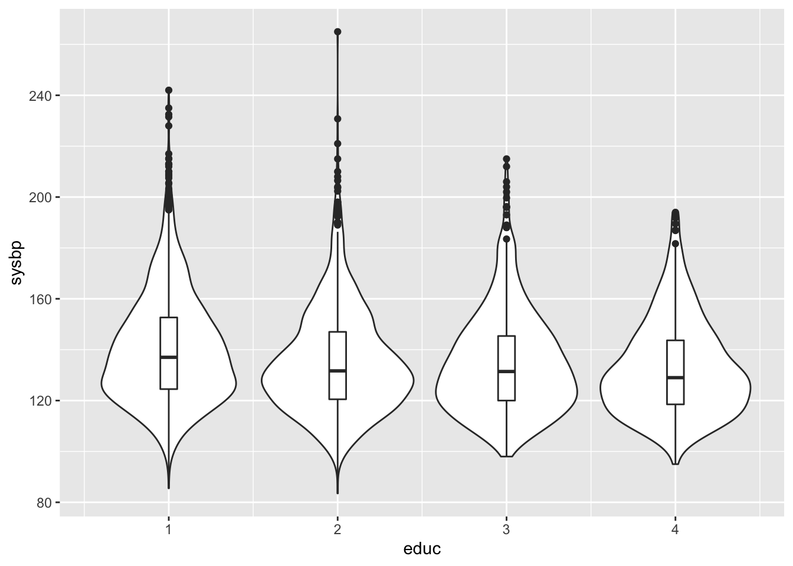
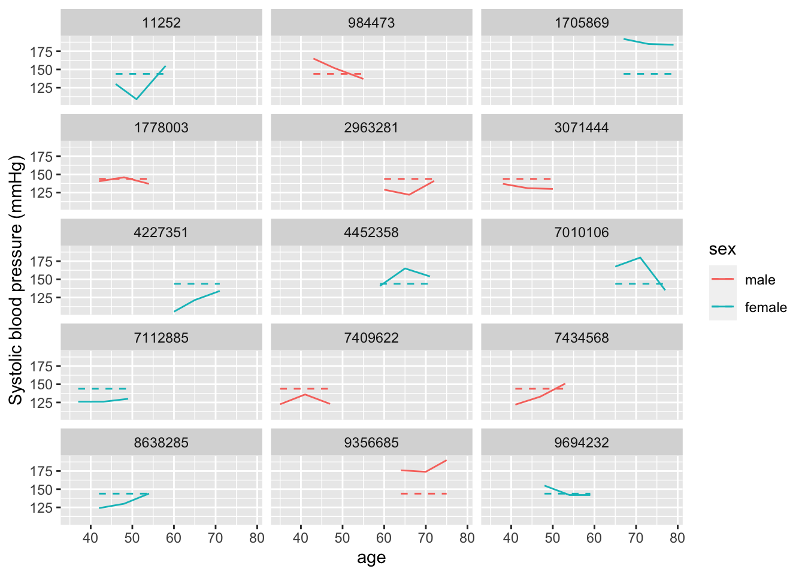
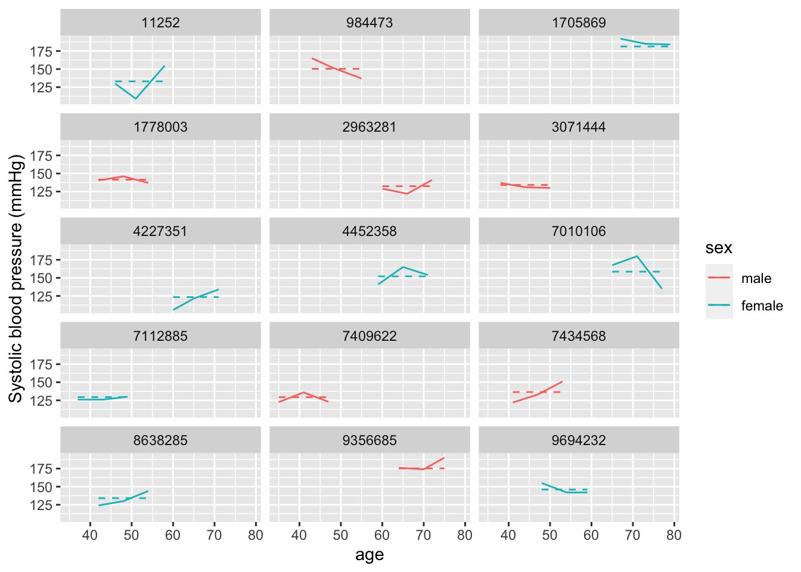
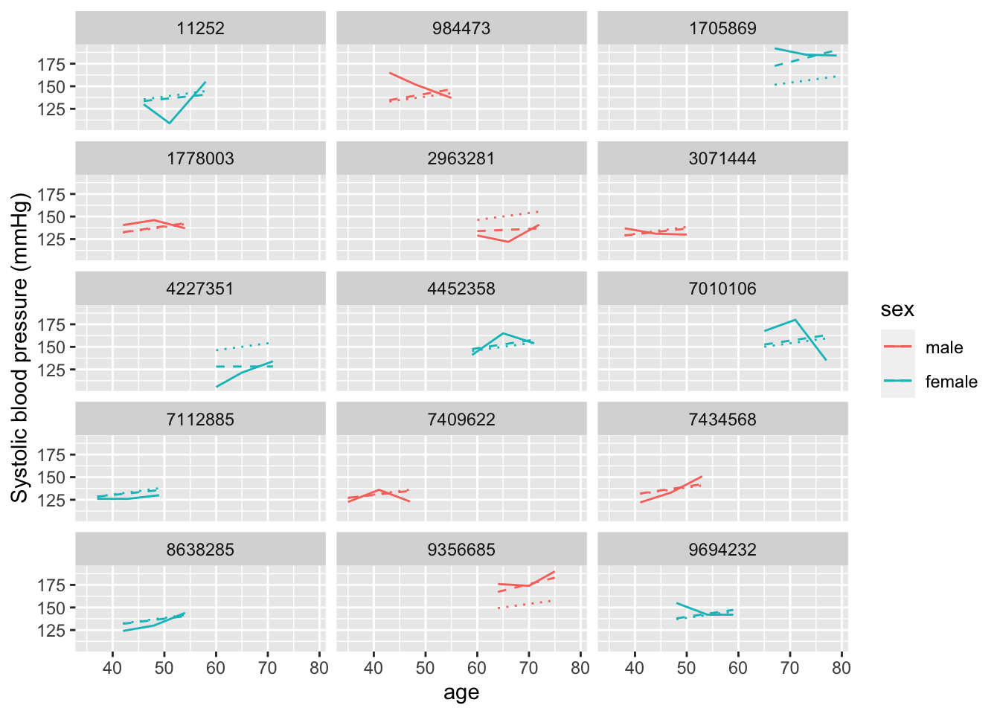

Chapter 9 Mixed models
9.1 Readings
The required readings for this chapter are:
- Loucks et al. (2011) Uses mixed models to explore the relationship between education level and blood pressure in the Framingham Offspring Study
There are also some supplemental readings you may find useful.
- Block et al. (2011) Another study that used mixed models to handle a repeated measures outcome in the Framingham Offspring study (in this case, BMI, in relation to proximity to food establishments)
- Rice et al. (2013) Another study that used mixed models to handle a repeated measures outcome in the Framingham family of studies (in this case, lung function, in relation to air pollution levels right before the exam)
- Gibbons, Hedeker, and DuToit (2010) A review of methodological approaches for repeated measures data
- Gelman and Hill (2006) A classic textbook on the topic (with examples in R), if you want a deeper dive
9.2 Introduction to mixed models
In all our previous models, we’ve been assuming that the observations are independent of each other, at least after accounting for the role of any of the covariates that were used in the model. However, this won’t always be a safe assumption to make. Many types of data have a type of inherent grouping (clustering), and in these cases observations are typically likely to be more similar within a group that between different groups.
One example, which we’ll explore in this module, is when you have more than one measurement on each study subject. These could be multiple measurements of the same person (othen called repeated measures), as we’ll see in the case of some outcomes in the Framingham Heart Study data. It could also be multiple measurements within families (i.e., one data point per family member, grouped in families), or multiple measurements per doctor (i.e., one data point per patient, grouped by the patients’ doctors). In all these cases, observations are likely more similar within a group than across groups, and as a result, once you fit a model, the errors are likely to be correlated—for example, if one measurement for a person has negative residual from the model prediction, then it’s likely that the person’s other measurements, on average, are also lower than their model predictions.
One way to address this type of data is to use a type of model called mixed models. These can handle this clustering in the observations, while still allowing you to model effects of different risk factors using a very similar process to the one you’ve used in earlier models (a regression-based approach).
In this module, we’ll explore how you can understand, use, and code mixed models. We’ll use the Framingham Heart Study data. Before, we looked at survival outcomes in this dataset. We started with analysis with one observation per participant - for example, we looked at the time from the baseline examination until death, and there can only be one measurement (or censoring) for each person for that outcome. Even in the time-varying setting survival outcomes have a certain structure by definition where we don’t have to worry about correlation. A participant will begin free of the outcome until they experience it, which can only occur once,or until censored and this is true for every participant. Here, we’ll look at a value that is measured at each examination—blood pressure. We have repeated measures of blood pressure for each study subject, and we’ll investigate how those are associated with one time-invariant variable (education level, which never changes for any of the study subjects over examination periods) and several time-variant variables (for example, BMI, which is recorded at all examinations).
We’ll start by creating a subset of just a few of the study subjects, so we can get a close look at what happens with mixed models, especially the random effects component that makes them different from the GLMs we’ve used in earlier modules. We’ll start by creating our sample of subjects and do some exploratory analysis of systolic blood pressure and some of its potential risk factors. In the next section, we’ll build models that include random effects intercepts in the next section of the chapter, starting with intercept-only models, and then moving to models that estimate the effects of risk factors like education level and BMI. In section after that, we’ll explore models that have random effects for both the intercept and the slope term for age (i.e., for how blood pressure evolves as people age).
Applied exercise: Creating a subset of subjects and performing exploratory analysis
Read the example cohort data in R and explore it to answer the following question:
- In a subset of fifteen subjects from the Framingham Heart Study (be sure to select only subjects with three examinations, so we can explore variation across repeated measures), how does systolic blood pressure relate to the potential risk factors of sex, age, smoking status, BMI, and education level?
Applied exercise: Example code
- In a subset of fifteen subjects from the Framingham Heart Study (be sure to select only subjects with three examinations, so we can explore variation across repeated measures), how does systolic blood pressure relate to the potential risk factors of sex, age, smoking status, BMI, and education level?
Let’s start by looking at a subset of the Framingham Heart Study data. We’ll randomly pick a few of the study subjects who had three examinations, and we’ll use this subset to explore the idea of using a mixed model to account for the inherent grouping in the data (three measurements for each study subject). Later, we’ll expand these ideas to look at the full study population, but it can be helpful to start by seeing what’s going on for just a few subjects first, to understand the idea of random versus fixed effects.
First, you’ll want to re-load the study data, if you don’t have it handy in your R session:
library(tidyverse) # Loads all the tidyverse packages, including readr
fhs <- read_csv("data/frmgham2.csv") %>%
rename_all(str_to_lower)Next, let’s create a sample of a few of the study subjects. We can use the
slice_sample function from the dplyr package to get a sample of rows from a
dataframe. Since we want to make sure that we sample at the level of study
subject, rather than measurement (otherwise, we’d probably only get one
measurement per sampled subject), we can nest the data first. This will reshape
the dataframe so that there’s one row per study subject (nesting by random ID)
rather than one per measurement. Once we’ve sampled, we can unnest to get back
to the original dimensions, with one row per measurement. We’ll also do a couple
of steps before sampling: we’ll create a new column that gives the number of
observations per person (which we’ll use when we create the sample to make sure
we’re sampling subjects with three examinations—we’re doing this to guarantee
we have multiple measurements for each subject in our small sample, but we’ll
take out this step when we move later to using the whole dataset). To make sure
that you get the same sample that we show here, you can set the seed to the same
number.
set.seed(416)
fhs_sample <- fhs %>%
# Relabel factor levels
mutate(sex = as_factor(sex),
sex = fct_recode(sex,
male = "1",
female = "2")) %>%
group_by(randid) %>%
# Calculate baseline age and number of observations for each study subject
mutate(n = n()) %>%
ungroup() %>%
# Filter to only subjects with three examinations
filter(n == 3) %>%
# Limit to just the columns we'll use (to make the dataset simpler)
select(randid, period, sex, age, sysbp,cursmoke, bmi, educ, time) %>%
# Nest the data, so there's one row per study subject, so we can sample
# by subject
nest(cols = -randid) %>%
# Sample a few study subjects
slice_sample(n = 15) %>%
# Unnest, to get back to one row per measurement
unnest(cols = cols)
fhs_sample## # A tibble: 45 × 9
## randid period sex age sysbp cursmoke bmi educ time
## <dbl> <dbl> <fct> <dbl> <dbl> <dbl> <dbl> <dbl> <dbl>
## 1 7112885 1 female 37 126 0 25.9 2 0
## 2 7112885 2 female 43 126 0 28.5 2 2113
## 3 7112885 3 female 49 130 0 29.2 2 4327
## 4 9356685 1 male 64 176 0 24.9 3 0
## 5 9356685 2 male 70 174 0 22.4 3 2129
## 6 9356685 3 male 75 190 0 27.0 3 4164
## 7 4452358 1 female 59 141 0 25.3 1 0
## 8 4452358 2 female 65 165 0 27.4 1 2104
## 9 4452358 3 female 71 154 0 26.4 1 4286
## 10 9694232 1 female 48 155 0 28.5 1 0
## # … with 35 more rowsThis code results in a dataset of a few study subjects, with three measurements
for each study subject. In this module, we’ll be looking at some risk factors
for high blood pressure (hypertension). Blood pressure is measured through
measurements of both systolic blood pressure, which is the pressure on your
arteries during a heart beat, and diabolic blood pressure, which is the pressure
on your arteries between heart beats. We’ll focus on systolic blood
pressure, which is included in the data in the column sysbp.
Let’s make a plot of how systolic blood pressure varies across each of our study subjects, looking at their measurements at different ages:
fhs_sample %>%
ggplot(aes(x = age, y = sysbp, group = randid,
color = sex)) +
geom_line() +
ylab("Systolic blood pressure (mmHg)")
Within this sample, we see that there’s a lot of variation across the study subjects in systolic blood pressure. Some of this variation is explained by age, both within and between subjects—for example, someone who is younger at the baseline examination tends to have lower measurements of blood pressure at all examinations compared to someone who is older at the baseline examination, and most subjects’ systolic blood pressure tends to increase as they age across their three examinations. In this sample, there doesn’t seem to be a clear pattern by sex (although it’s a bit hard to be definitive with this small sample).
Let’s start by looking at some variables in the data that might be correlated
with systolic blood pressure. In this section, we’re aiming to build up to a
model that will let us explore the association between education level (educ)
and systolic blood pressure. We’ll also explore the association with some other
potential risk factors, including BMI, which we’ll also include as potential
confounders when we investiate the association with education level. For this,
we’ve picked a few factors, based on prior knowledge, that might be associated
with systolic blood pressure—sex, age, smoking status, and BMI We can start
with some exploratory analysis to see how they’re linked in this sample of
subjects.
First, the GGally package can produce a nice exploratory graph that includes
the univariate distribution of each column, plus correlations and scatterplots
to show the relationship between each pair of columns:
library(GGally)
fhs_sample %>%
select(sex, age, cursmoke, bmi, educ, sysbp) %>%
ggpairs()
Based on this, age is clearly correlated with systolic blood pressure, with blood pressure tending to be higher at higher ages. BMI also seems to be associated, with blood pressure tending to be higher at higher BMI. There are also some smaller associations between smoking status (blood pressure tends to be lower for current smokers, although keep in mind that smoking status looks like it’s correlated with age, with current smokers tending to be younger) and education level (blood pressure tends to be lower for higher education levels).
For a simpler graphic of these correlations, we can use the package
ggcorrplot, which can create a correlation plot. You first use cor (in base
R) to calculate the correlation matrix and then pass this to the ggcorrplot
function. Since only numeric values can be included when calculating the
correlation matrix, we’ll level sex out this time. This function shows only
correlations, but would be nice with larger datasets, which the ggpairs
function might struggle to fit quickly (because there are so many observations):
library(ggcorrplot)
fhs_sample %>%
select(age, cursmoke, bmi, educ, sysbp) %>%
cor() %>%
ggcorrplot(method = "circle", type = "lower")
We could also use beeswarm plots in our original data to explore how education levels are associated with systolic blood pressure in that full dataset:
library(ggbeeswarm)
fhs %>%
group_by(randid) %>%
summarize(educ = first(educ),
sysbp = mean(sysbp, na.rm = TRUE)) %>%
ggplot(aes(x = educ, y = sysbp, group = educ)) +
geom_violin() +
geom_boxplot(width=0.1)
9.3 Mixed models with random intercepts
Applied exercise: Mixed models with random intercepts
Explore models with a random effect intercept for each study subject:
- Fit an intercept-only fixed effects model to the sample of study subjects. Do errors tend to be correlated within each study subject from this model?
- Next, try fitting a random effects intercept-only model to the same data. Has this resolved any issues with correlated errors within study subjects in the fixed effects model?
- Now expand the mixed effects model that you just fit. First, just add a term for age, then build one that includes terms for age, sex, BMI, smoking status, and education. What do you conclude from these models? Focus particularly on how systolic blood pressure is associated with two of the time-variant measures (age and BMI) and on the time-invariant measure (education level).
- Try fitting the final model (with a random effect intercept for each study subject and terms for age, sex, BMI, smoking status, and education) to the full dataset, rather than the sample of a few subjects. What can you conclude?
Applied exercise: Example code
- Fit an intercept-only fixed effects model to the sample of study subjects. Do errors tend to be correlated within each study subject from this model?
If we fit a model with nothing but a fixed effect intercept, our predicted systolic
blood pressure would be the same for everyone. This is a very simple model to
specify—you can use the glm (or in this case lm since we are fitting a linear
model) function since we’re using only a fixed effect (more later on what that is,
but essentially it’s the type of effect we’ve been fitting in all the previous models),
and in the model formula, we only need to specify 1 for an intercept:
int_only_fe_mod <- fhs_sample %>%
glm(sysbp ~ 1, data = .) The model we are fitting here is the following: \[ Y_{ti} = \beta_{0} + \epsilon_{ti} \]
where systolic blood pressure \(Y_{ti}\) varies by participant \(i\) and time-period \(t\) (3 time-periods for each of the 15 participants totaling 45 combinations for \(Y_{ti}\)), \(\beta_{0}\) is the MLE (OLS) estimate for the intercept (essentially the mean of all 45 observations) and \(\epsilon_{ti}\) is the model residual for each participant-specific time-period (each observation). We are assuming that \(\epsilon_{ti} \sim N(0,\sigma^2)\), but also that they are all independent.
Let’s take a look at how predictions for this model compare to the observed data for each study subject. One nice way to do that is to used faceting in ggplot to create a small plot for each study subject, so we can focus on each individual’s set of repeated measures:
library(broom)
int_only_fe_mod %>%
augment(data = fhs_sample) %>%
ggplot(aes(x = age, color = sex)) +
geom_line(aes(y = sysbp), linetype = 1) +
geom_line(aes(y = .fitted), linetype = 2) +
ylab("Systolic blood pressure (mmHg)") +
facet_wrap(~ randid, ncol = 3)
In this plot, the solid lines show the observed data for each person in the sample (again, each person’s data is shown in one small plot). The dotted line shows the predicted value based on the (intercept-only) model. You can see that everyone has the same predicted systolic blood pressure—it’s just the estimated coefficient for the intercept from the model. But some people tend to have higher-than-average blood pressure, regardless of their age, and some tend to have lower-than-average blood pressure. For these people, the error in the model (the residual between the fitted and predicted values) is always in the same direction. For example, if someone tends to have blood pressure that’s higher than their predicted value in their first examination, they also tend to have blood pressure that’s higher than their predicted value for all other examinations, and vice-versa for people with lower-than-average blood pressure. In other words, the model errors are correlated within each study subject, and so if we fit the model to all the data without accounting for this, we’ll have issues with the assumption that observations are independent. Instead, they’re clustered by study subject, with measurements tending to be more similar when you compare different examinations within the same subject than when you compare measurements from different subjects.
We can account for this clustering in the data by using a type of model called a mixed model. (There are lots of different names for this type of model that you might see, including random effects models and mixed effects models.) These are called mixed models because they mix two types of effects: fixed effects (which are what we’ve been fitting in all our models so far) and something called random effects. A random effect allows for some variation in an effect across some grouping factor in the data—in our case, the study subjects. It’s constrained to follow some distribution—in other words, we might assume that intercepts are different across each study subject, but come from a normal distribution centered at the overall intercept.
This constraint creates the difference between fitting a random effect intercept model (where a random effect for the intercept allows the intercept to be different for each study subject) and just including a fixed effect for the study subject ID (which would create a completely different intercept for each study subject, without any constraints on those intercept estimates). This constraint also helps us if we want to infer or predict to units that weren’t in the study—in other words, to people who weren’t study subjects. If we fit a separate fixed effect intercept for each person in the study, we wouldn’t be able to predict for new people, because we wouldn’t have an intercept estimate for them. The random effects model assumes (through this constraint on the random effect) that the average difference between each study subject’s intercept and the overall intercept is zero, and that those differences are normally distributed, so you can build on these assumptions to predict outcomes for people not included in the original analysis.
- Next, try fitting a random effects intercept-only model to the same data. Has this resolved any issues with correlated errors within study subjects in the fixed effects model?
Let’s try fitting a random effects intercept model to the data and see how our
predictions differ compared to the intercept-only fixed effects model we just fit.
We can use the lmer function from the lme4 package in R to do this. Within
this function, we will specify the systematic part of the model the same as
we did with lm or glm—this is the part with the fixed effects for the model,
which in this case is only an intercept (1). We can then fit the random
effect for the grouping variable (study subject) by adding it to the model formula
inside parentheses, with the elements we want to include first (1 for only
an intercept random effect), and then a bar, and then the column that gives
the grouping variable (randid for the study subject): (1 | randid).
library(lme4)
int_only_mm_mod <- fhs_sample %>%
lmer(sysbp ~ 1 + (1 | randid), data = .) The model we are fitting here is \[ Y_{ti} = \beta_{0} + b_{i} + \epsilon_{ti} \] where we have now added the random intercept term \(b{i}\) that varies by participant \(i\), but is constant over time for each participant. We are also assuming that \(b_{i} \sim N(0,\sigma_{b}^2)\) and \(\epsilon_{ti} \sim N(0,\sigma^2)\) and that \(b_{i}\) and \(\epsilon_{ti}\) are mutually independent. The overall variance of \(Y_{ti}\) is the sum of \(\sigma_{b}^2\) and \(\sigma^2\).
Now we can look at the fitted values for each study subject again. To do this,
we can use an augment function (as we did when using broom functions with
glm objects), but we’ll need to load a new library (broom.mixed) that defines
those broom methods for the model output from these mixed models.
library(broom.mixed)
int_only_mm_mod %>%
augment(data = fhs_sample) %>%
ggplot(aes(x = age, color = sex)) +
geom_line(aes(y = sysbp), linetype = 1) +
geom_line(aes(y = .fitted), linetype = 2) +
ylab("Systolic blood pressure (mmHg)") +
facet_wrap(~ randid, ncol = 3)
You can see that this has really reduced our prediction errors—the predicted values are now much closer to the observed values for each study subject, because now each person has their own intercept. Further, it’s eliminated the correlation in errors. Each study subject now tends to have an equal number of measurements that are over- versus under-predicted, since we’ve allowed the estimated intercept to be subject-specific.
Let’s take a look at the output of this model a bit more. First, we can use
coef to pull out the coefficients for each unit for which we fit a random
effect—in this case, for each study subject:
int_only_mm_mod %>%
coef() ## $randid
## (Intercept)
## 11252 132.9810
## 984473 150.3447
## 1705869 181.3100
## 1778003 141.5182
## 2963281 132.4022
## 3071444 134.1386
## 4227351 123.4310
## 4452358 152.0811
## 7010106 158.5925
## 7112885 129.5083
## 7409622 129.3636
## 7434568 136.4538
## 8638285 134.1386
## 9356685 175.2327
## 9694232 146.0038
##
## attr(,"class")
## [1] "coef.mer"The (Intercept) column is the only one here, since we only fit an intercept.
This is incorporating, for each study subject, both the overall (fixed effect)
intercept that we fit in the model, as well as how that subject’s intercept
randomly varies from the overall one, or in other words the \(\beta_{0} + \b_{i}\)
for each participant \(i\). We can see that these subject-specific intercepts
range from the 120s through the 180s.
Next, we can look at a summary of the model as a whole:
int_only_mm_mod %>%
summary()## Linear mixed model fit by REML ['lmerMod']
## Formula: sysbp ~ 1 + (1 | randid)
## Data: .
##
## REML criterion at convergence: 378
##
## Scaled residuals:
## Min 1Q Median 3Q Max
## -1.9465 -0.3359 -0.1001 0.6979 1.7872
##
## Random effects:
## Groups Name Variance Std.Dev.
## randid (Intercept) 333.2 18.25
## Residual 151.8 12.32
## Number of obs: 45, groups: randid, 15
##
## Fixed effects:
## Estimate Std. Error t value
## (Intercept) 143.833 5.059 28.43This give some information about both the fixed and random effects (again, in this case, just an intercept for each). The fixed effect intercept is 143.833—this is around the average blood pressure for all measurements in this sample. The section on the random effects gives some information about how variation from this intercept can be divided into variation based on the grouping unit (study subject) or other variation, not explained by differences between people (this could include variation from other factors that we haven’t included in our model yet, like age or BMI).
You can see from this section that the total variance (_{b}^2 + ^2) is 333.2 + 151.8 = 485. A lot of this (333.2 / 485 = 0.69, or about 69%) results from variation between subjects (\(\sigma_{b}^2\)), but there’s still some variance that comes from within-subject variation (variation in blood pressure measurements from one examination to another for the same person, ^2).
The tidy method for this class will pull out information on both the random
and fixed effect, including a column named effect that lets you extract only
fixed or only random estimates by filtering. The estimate that it’s giving for
the two random effect components (that from variation between study subjects,
“randid,” and that from remaining variation in the data, “Residual”) is the
standard deviation column given in the summary output for the model; these values
are \(\sigma_{b}\) and \(\sigma\) resepctively and if you want to get the variances,
you could just square these values.
int_only_mm_mod %>%
tidy()## # A tibble: 3 × 6
## effect group term estimate std.error statistic
## <chr> <chr> <chr> <dbl> <dbl> <dbl>
## 1 fixed <NA> (Intercept) 144. 5.06 28.4
## 2 ran_pars randid sd__(Intercept) 18.3 NA NA
## 3 ran_pars Residual sd__Observation 12.3 NA NAThe augment method will give results from the model at the level of each of your
original observations. For these models, it’s helpful to clarify that you want
to augment the original data (fhs_sample), rather than basing it on the model
matrix that’s the default. This will ensure that you can maintain information about
the randid for each row of the augmented data.
int_only_mm_mod %>%
augment(data = fhs_sample)## # A tibble: 45 × 20
## randid period sex age sysbp cursmoke bmi educ time .fitted .resid
## <dbl> <dbl> <fct> <dbl> <dbl> <dbl> <dbl> <dbl> <dbl> <dbl> <dbl>
## 1 7112885 1 female 37 126 0 25.9 2 0 130. -3.51
## 2 7112885 2 female 43 126 0 28.5 2 2113 130. -3.51
## 3 7112885 3 female 49 130 0 29.2 2 4327 130. 0.492
## 4 9356685 1 male 64 176 0 24.9 3 0 175. 0.767
## 5 9356685 2 male 70 174 0 22.4 3 2129 175. -1.23
## 6 9356685 3 male 75 190 0 27.0 3 4164 175. 14.8
## 7 4452358 1 female 59 141 0 25.3 1 0 152. -11.1
## 8 4452358 2 female 65 165 0 27.4 1 2104 152. 12.9
## 9 4452358 3 female 71 154 0 26.4 1 4286 152. 1.92
## 10 9694232 1 female 48 155 0 28.5 1 0 146. 9.00
## # … with 35 more rows, and 9 more variables: .hat <dbl>, .cooksd <dbl>,
## # .fixed <dbl>, .mu <dbl>, .offset <dbl>, .sqrtXwt <dbl>, .sqrtrwt <dbl>,
## # .weights <dbl>, .wtres <dbl>In this output, it’s taken the original fhs_sample data and added columns
based on the model, including columns with the estimated systolic blood pressure
for each observation (.fitted) and the fixed effect estimate (i.e., removing
the contribution from any random effects, so in this case the fixed effect
intercept; .fixed).
There are other specialized functions in lme4 that you can use to extract
specific elements from the model object. For example, fixef will pull out only
the central estimates for the fixed effects, while ranef will pull out only
the random effect component (in this case, the difference for each subject
between the overall, fixed effect intercept estimate and their personal intercept
estimate). If you wanted, you could use these elements to add up to the
subject-specific estimates we got using coef.
- Now expand the mixed effects model that you just fit. First, just add a term for age, then build one that includes terms for age, sex, BMI, smoking status, and education. What do you conclude from these models? Focus particularly on how systolic blood pressure is associated with two of the time-variant measures (age and BMI) and on the time-invariant measure (education level).
The intercept-only mixed effects model helps us see how the idea of a random effect works, but it’s often not particularly interesting, as we often are more interested in how some risk factor is associated with an outcome, rather than just how that outcome varies across measurements and study subjects. In this section, we’ll build on the intercept-only model to include some covariates.
Let’s start with age, since that was clearly linked with systolic blood pressure
in our exploratory analysis. There are a couple ways we could include
age—either using the age at each examination, or using a combination of the
age at baseline examine and the time since the baseline exam. We’ll do the
first, since conceptually it’s a bit simpler. We’ll therefore include age and an
intercept in the fixed part (which we can specify just as age—we don’t need
to add 1 for intercept since it’s the default if you put in any other
covariates). For the random effect, we’ll continue to only add a random
intercept for each study subject ((1 | randid)).
age_mm_mod <- fhs_sample %>%
lmer(sysbp ~ age + (1 | randid), data = .) Here we fit a similar model to the random intercept one, by simply addig the fixed effect for age: \[ Y_{ti} = \beta_{0} + \beta_{1}X_{ti1} + b_{i} + \epsilon_{ti} \]
Note that age \(X_{ti1}\) also varies by participant and time-period.
Again, we can see how our predictions have changed in our set of sample subjects:
age_mm_mod %>%
augment(data = fhs_sample) %>%
ggplot(aes(x = age, color = sex)) +
geom_line(aes(y = sysbp), linetype = 1) +
geom_line(aes(y = .fitted), linetype = 2) +
geom_line(aes(y = .fixed), linetype = 3) +
ylab("Systolic blood pressure (mmHg)") +
facet_wrap(~ randid, ncol = 3)In this case, we’re showing three different lines, which help tease apart the different components of the model. First, the solid line shows the observed data at each examination. The dotted line (with the smallest dots) shows the prediction for each study subject based only on the fixed effects estimates. Since our model only includes an intercept and age for the fixed effects, you can see that this line changes by age, but otherwise is at the same spot for everyone. (To help see this, pick out two study subjects with examinations at around the same ages, and this dotted line should look the same for both.) Finally, the dashed line includes the random intercept for each study subject. The slope of this line is the same as for the fixed effects estimate, but that random, subject-specific intercept is allowing the line to move up or down to fit the study subject’s data more closely. Again, we see that we would have had correlated errors if we’d only used fixed effects, even with the term for age, but that the random effects intercept seems to remove most of this issue.
We can look at the summary for this model:
age_mm_mod %>%
summary()## Linear mixed model fit by REML ['lmerMod']
## Formula: sysbp ~ age + (1 | randid)
## Data: .
##
## REML criterion at convergence: 373
##
## Scaled residuals:
## Min 1Q Median 3Q Max
## -2.31165 -0.43772 -0.08221 0.46569 1.62719
##
## Random effects:
## Groups Name Variance Std.Dev.
## randid (Intercept) 201.5 14.19
## Residual 156.9 12.53
## Number of obs: 45, groups: randid, 15
##
## Fixed effects:
## Estimate Std. Error t value
## (Intercept) 103.5535 15.5730 6.650
## age 0.7236 0.2698 2.682
##
## Correlation of Fixed Effects:
## (Intr)
## age -0.964Now you can see that there are fixed effects estimates for both the intercept (the overall intercept) and for age. The age fixed effect gives the estimated slope of the dotted and dashed lines we saw in the previous figure—that is, the expected increase in systolic blood pressure for every extra year of age.
We can look at the random effects, as well. Again, we have estimates of the variance components from both the between-subject variation (“randid,” \(\sigma_{b}^2\)) and from “left over” variation after accounting for study subject (“Residual,” \(\sigma^2\)). If you compare these values to the intercept-only mixed model, you can see that the variance associated with the study subject is now lower (\(\sigma_{b}^2\)). This is because some of the original variation in blood pressure from one study subject to another was related to variation in age among study subjects. Now that we have a fixed term for age, we’ve managed to use that to explain some of the variation in blood pressure when comparing different study subjects (although there’s still plenty variation that’s explained by other subject-specific factors that we haven’t included as fixed effects or maybe haven’t even measured, as the estimate here for “randid” is still pretty high).
Let’s build the model up now to test one of our risk factors of interest, education. Let’s also include model control for smoking, sex, and BMI. For all of these, we have measures that span the range we might expect in our target population, so we’ll include these using fixed effects terms:
full_mm_mod <- fhs_sample %>%
lmer(sysbp ~ age + sex + bmi + cursmoke + educ + (1 | randid),
data = .)
full_mm_mod %>%
summary()## Linear mixed model fit by REML ['lmerMod']
## Formula: sysbp ~ age + sex + bmi + cursmoke + educ + (1 | randid)
## Data: .
##
## REML criterion at convergence: 343.4
##
## Scaled residuals:
## Min 1Q Median 3Q Max
## -1.7989 -0.4638 0.1184 0.4457 1.9807
##
## Random effects:
## Groups Name Variance Std.Dev.
## randid (Intercept) 162.2 12.73
## Residual 131.2 11.45
## Number of obs: 45, groups: randid, 15
##
## Fixed effects:
## Estimate Std. Error t value
## (Intercept) 63.0072 27.7817 2.268
## age 0.6831 0.2766 2.470
## sexfemale -8.4050 8.1450 -1.032
## bmi 1.9633 0.6526 3.009
## cursmoke -3.9953 7.6806 -0.520
## educ -2.4729 4.5599 -0.542
##
## Correlation of Fixed Effects:
## (Intr) age sexfml bmi cursmk
## age -0.548
## sexfemale -0.131 -0.065
## bmi -0.734 -0.016 -0.070
## cursmoke -0.394 0.414 0.312 0.057
## educ -0.504 -0.079 0.087 0.364 -0.040The model now is
\[ Y_{ti} = \beta_{0} + \beta_{1}X_{ti1} + \beta_{2}X_{i2} + \beta_{3}X_{ti3} + \beta_{4}X_{ti4} + \beta_{5}X_{i5} + b_{i} + \epsilon_{ti} \]
where age (\(X_{ti1}\)), BMI (\(X_{ti3}\)) and smoking (\(X_{ti4}\)) vary by participant and time period, whereas sex (\(X_{i2}\)) and education level (\(X_{i5}\)) only vary by participant.
Since part of our aim is to explore the role of education, let’s look at the
educ fixed effect term (\(\beta_{5}\)). Based on the estimate, it looks like systolic blood
pressure tends to be lower for people with higher levels of education.
We can’t directly calculate our confidence interval for this coefficient estimate
from the standard error, as we would for a GLM. Instead, we can use the
confint.merMod function that comes with the lme4 package:
full_mm_mod %>%
confint.merMod()## Computing profile confidence intervals ...## 2.5 % 97.5 %
## .sig01 2.5909664 16.942640
## .sigma 8.8895592 15.390316
## (Intercept) 9.9000046 109.789814
## age 0.2071763 1.379707
## sexfemale -22.2559971 5.357477
## bmi 0.7363315 3.065818
## cursmoke -16.9445201 11.597196
## educ -10.3674141 5.181958Based on this output, the relationship between education level and systolic blood pressure is not statistically significant in our sample of study subjects, as the estimated confidence intervals for the fixed effect of education include zero. By contrast, age and BMI both seem to have a statistically significant association with systolic blood pressure.
- Try fitting the final model (with a random effect intercept for each study subject and terms for age, sex, BMI, smoking status, and education) to the full dataset, rather than the sample of a few subjects. What can you conclude?
We can expand this model to include all the study subjects now, to see if something is detectable once we have that increased power:
full_mm_mod_alldata <- fhs %>%
lmer(sysbp ~ age + sex + bmi + cursmoke + educ + (1 | randid),
data = .)
full_mm_mod_alldata %>%
summary()## Linear mixed model fit by REML ['lmerMod']
## Formula: sysbp ~ age + sex + bmi + cursmoke + educ + (1 | randid)
## Data: .
##
## REML criterion at convergence: 96139.7
##
## Scaled residuals:
## Min 1Q Median 3Q Max
## -3.2525 -0.5315 -0.0509 0.4585 6.0763
##
## Random effects:
## Groups Name Variance Std.Dev.
## randid (Intercept) 261.9 16.18
## Residual 156.1 12.49
## Number of obs: 11282, groups: randid, 4307
##
## Fixed effects:
## Estimate Std. Error t value
## (Intercept) 51.13151 2.35788 21.685
## age 0.84314 0.02096 40.224
## sex 2.49310 0.56084 4.445
## bmi 1.43106 0.05870 24.379
## cursmoke -0.10641 0.43958 -0.242
## educ -0.70184 0.27161 -2.584
##
## Correlation of Fixed Effects:
## (Intr) age sex bmi cursmk
## age -0.529
## sex -0.439 0.014
## bmi -0.704 -0.008 0.070
## cursmoke -0.344 0.248 0.126 0.134
## educ -0.365 0.097 0.024 0.120 0.039full_mm_mod_alldata %>%
confint.merMod()## Computing profile confidence intervals ...## 2.5 % 97.5 %
## .sig01 15.7414341 16.6192814
## .sigma 12.2871361 12.7055471
## (Intercept) 46.5100344 55.7515766
## age 0.8020672 0.8842684
## sex 1.3942208 3.5919872
## bmi 1.3160266 1.5460718
## cursmoke -0.9677114 0.7551252
## educ -1.2340390 -0.1696473Based on this assessment, there’s a small but statistically significant association between education level at the baseline examination and systolic blood pressure during the study. We can also see that systolic blood pressure is significantly associated with age, sex, and BMI, so these all may be risk factors for high blood pressure.
At this stage, you could explore more complex models. For example, there may be an interaction between age and sex, where the evolution of blood pressure during aging tends to be different for males versus females. We could add an interaction term to the model to explore this:
full_mm_mod_alldata2 <- fhs %>%
lmer(sysbp ~ age * sex + bmi + cursmoke + educ + (1 | randid),
data = .)
full_mm_mod_alldata2 %>%
summary()## Linear mixed model fit by REML ['lmerMod']
## Formula: sysbp ~ age * sex + bmi + cursmoke + educ + (1 | randid)
## Data: .
##
## REML criterion at convergence: 96119.5
##
## Scaled residuals:
## Min 1Q Median 3Q Max
## -3.2513 -0.5328 -0.0526 0.4612 6.0140
##
## Random effects:
## Groups Name Variance Std.Dev.
## randid (Intercept) 257.9 16.06
## Residual 156.7 12.52
## Number of obs: 11282, groups: randid, 4307
##
## Fixed effects:
## Estimate Std. Error t value
## (Intercept) 69.53601 4.35998 15.949
## age 0.52002 0.06779 7.671
## sex -8.76656 2.31205 -3.792
## bmi 1.40663 0.05870 23.963
## cursmoke -0.20762 0.43931 -0.473
## educ -0.72180 0.27006 -2.673
## age:sex 0.20537 0.04093 5.018
##
## Correlation of Fixed Effects:
## (Intr) age sex bmi cursmk educ
## age -0.889
## sex -0.874 0.924
## bmi -0.448 0.076 0.097
## cursmoke -0.225 0.121 0.076 0.137
## educ -0.210 0.045 0.021 0.122 0.039
## age:sex 0.842 -0.951 -0.970 -0.082 -0.047 -0.015full_mm_mod_alldata2 %>%
confint.merMod()## Computing profile confidence intervals ...## 2.5 % 97.5 %
## .sig01 15.6135990 16.4926583
## .sigma 12.3097777 12.7300610
## (Intercept) 60.9726067 78.1195143
## age 0.3863850 0.6532505
## sex -13.3311622 -4.2170025
## bmi 1.2915867 1.5216440
## cursmoke -1.0683462 0.6533164
## educ -1.2509263 -0.1926849
## age:sex 0.1248205 0.2862160There does seem to be a statistically significant interaction, although accounting for it hasn’t made a big shift in our estimate of the fixed effect of education level on systolic blood pressure.
We could also treat each level of education as a separate category, in case there’s non-linearity between these four different designations of education level and the association with systolic blood pressure:
full_mm_mod_alldata3 <- fhs %>%
mutate(educ = as_factor(educ),
educ = fct_recode(educ,
lowest = "1",
middle_low = "2",
middle_high = "3",
highest = "4")) %>%
lmer(sysbp ~ age*sex + bmi + cursmoke + educ + (1 | randid),
data = .)
full_mm_mod_alldata3 %>%
summary()## Linear mixed model fit by REML ['lmerMod']
## Formula: sysbp ~ age * sex + bmi + cursmoke + educ + (1 | randid)
## Data: .
##
## REML criterion at convergence: 96110.6
##
## Scaled residuals:
## Min 1Q Median 3Q Max
## -3.2617 -0.5313 -0.0525 0.4602 6.0020
##
## Random effects:
## Groups Name Variance Std.Dev.
## randid (Intercept) 257.6 16.05
## Residual 156.7 12.52
## Number of obs: 11282, groups: randid, 4307
##
## Fixed effects:
## Estimate Std. Error t value
## (Intercept) 68.06330 4.32861 15.724
## age 0.52688 0.06788 7.762
## sex -8.79583 2.31364 -3.802
## bmi 1.41260 0.05877 24.034
## cursmoke -0.22508 0.43936 -0.512
## educmiddle_low 0.49582 0.66671 0.744
## educmiddle_high -0.98811 0.80441 -1.228
## educhighest -2.48161 0.91331 -2.717
## age:sex 0.20389 0.04093 4.981
##
## Correlation of Fixed Effects:
## (Intr) age sex bmi cursmk edcmddl_l edcmddl_h edchgh
## age -0.896
## sex -0.879 0.923
## bmi -0.446 0.078 0.095
## cursmoke -0.222 0.120 0.075 0.136
## educmddl_lw -0.143 0.067 0.013 0.088 -0.004
## edcmddl_hgh -0.103 0.030 -0.015 0.111 0.030 0.359
## educhighest -0.130 0.040 0.036 0.090 0.033 0.308 0.253
## age:sex 0.849 -0.951 -0.970 -0.083 -0.046 -0.027 -0.005 -0.017full_mm_mod_alldata3 %>%
confint.merMod()## Computing profile confidence intervals ...## 2.5 % 97.5 %
## .sig01 15.6010488 16.4799563
## .sigma 12.3106597 12.7310252
## (Intercept) 59.5697205 76.5894555
## age 0.3929950 0.6601475
## sex -13.3671197 -4.2482708
## bmi 1.2974221 1.5277259
## cursmoke -1.0857556 0.6359310
## educmiddle_low -0.8100710 1.8018785
## educmiddle_high -2.5637284 0.5876557
## educhighest -4.2705481 -0.6925419
## age:sex 0.1234191 0.2848179The decrease in expected blood pressure is most notable when you compare the highest education group to the lowest education risk.
9.4 Adding random effect slopes
We can also add other random effects to our models. For example, if we think that each of the people has a different evolution of blood pressure as they age, then we could include a random effect for age. This will allow the slope fit for age to vary across each person in the study. Again, this random effect estimate will be constrained—it will have an average difference of 0 from the fixed effect for age, and there will typically be a constraint on how these differences from the fixed effect are distributed. This usually means that these estimates will be a little more similar across people than if we fitted a fixed effect estimate that allowed a separate slope by age for each person (which you could do in a fixed effect by taking the interaction between subject ID and age).
Applied exercise: Mixed models with random intercepts
Explore models with a random effect intercept and random effect for age for each study subject:
- Fit a model with a fixed effect for age, as well as random effects for both age and sex, using the sample of a few study subjects. How do your predicts change from the mixed model you fit in the previous section that had a fixed effect term for age, but no random effect?
Applied exercise: Example code
- Fit a model with a fixed effect for age, as well as random effects for both age and sex. How do your predicts change from the mixed model you fit in the previous section that had a fixed effect term for age, but no random effect?
We can fit a very similar model, but now in the random effects, we’ll include
a term for age, writing (1 + age | randid) for that component. (As a note, you
may get a warning when you fit this—since there are so few repeated measures
for each person, we’re probably pushing the model a bit to include a fixed
effect for age in this case, but it’s useful to know how to do this if you
have a larger set of repeated measures for each person, so we’d like to
cover the principle.)
age_mm_mod2 <- fhs_sample %>%
lmer(sysbp ~ age + (1 + age | randid), data = .) The model fitted here is \[ Y_{ti} = \beta_{0} + \beta_{1}X_{ti1} + b_{0i} + b_{1i}X_{ti1} + \epsilon_{ti} \] with \(b_{1i}\) being the added slope term for age and with the added assumption that \(b_{1i} \sim N(0,\sigma_{b1}^2)\) in addition to \(b_{0i} \sim N(0,\sigma_{b0}^2)\) and \(\epsilon_{ti} \sim N(0,\sigma^2)\)
We can take a look again at the predictions from this model:
age_mm_mod2 %>%
augment(data = fhs_sample) %>%
ggplot(aes(x = age, color = sex)) +
geom_line(aes(y = sysbp), linetype = 1) +
geom_line(aes(y = .fitted), linetype = 2) +
geom_line(aes(y = .fixed), linetype = 3) +
ylab("Systolic blood pressure (mmHg)") +
facet_wrap(~ randid, ncol = 3)
It’s a bit subtle to see here, but unlike in our earlier model, now each
prediction (dashed line) has a slope that can vary between study subjects.
We can check this as well by running coef:
age_mm_mod2 %>%
coef()## $randid
## (Intercept) age
## 11252 106.66493 0.586807745
## 984473 91.36055 1.005592509
## 1705869 74.78124 1.459263808
## 1778003 97.72449 0.831451282
## 2963281 119.12588 0.245829888
## 3071444 104.82388 0.637185863
## 4227351 127.97246 0.003754752
## 4452358 96.44882 0.866358574
## 7010106 96.65865 0.860616783
## 7112885 105.83536 0.609508034
## 7409622 104.87867 0.635686492
## 7434568 96.79621 0.856852485
## 8638285 102.53088 0.699930724
## 9356685 75.96414 1.426895303
## 9694232 96.81986 0.856205365
##
## attr(,"class")
## [1] "coef.mer"When we ran this function on the earlier model, we only got estimates for an intercept for each study subject. Now we get subject-specific intercepts and slopes for how blood pressure changes with age (or \(\beta_{1} + b_{1i}\)). You can see that, for some study subjects, this slope is very close to zero (i.e., blood pressure stays similar with age), while for others, it’s much higher than the fixed effects estimate for the age slope of 0.72 from our earlier model.
9.5 Some final points on mixed effects models:
- Fitting multiple levels of nesting (e.g., measures within people within families)
As we’ve noted earlier clusters can be nested within other clusrters. For example if we have repeated observations over time for participant \(i\) and several participants per family \(j\), then we expect to have correlation within person, as well as within family. These type of data are also considered multi-level or hierarchical due to the levels of correlation and the hierarchy in these levels. The lowest level (participant) is nested within a higher level (family). We can account for this type of correlation structure by fitting a multilevel or hierarchical model. For a similar estimation as above (assume we have repeated blood pressure measurements at time-periods \(t\) for each participant \(i\) and multiple participants within each family \(j\)) this would look something like
\[ Y_{tij} = \beta_{0} + b_{ij} + b_{j} + \epsilon_{tij} \]
where we now hove two random intercepts, one for each participant \(i\) in the \(j^th\) family (\(b_{ij}\)) and one for each family \(j\) (\(b_{ij}\)).
Another important level of clustering especially in environmental epidemiology is space, where a lot of observations on exposure and outcomes are spatially correlated. A hierarchical model in this situation could be one applying to data with multiple observations (time-periods \(t\)) per participant \(i\) and multiple participants per zip code \(j\). We have multiple observations over time nested within participant, and participants nested within zip code.
- Other forms of GLMs as mixed models (logistic, Poisson)
The examples above have been dealing with a continuous outcome and the models we
were fitting were mixed effects linear models, however the mixed effects models
framework extends to the generilized linear model framework (generilized linear
mixed models). The glmer package in R allows for fitting of such models (e.g.
Poisson, logistic etc) in a similar fashion to lme4. An intercept only + random
intercept per participant logistic model for repeated measures of a binary obesity variable (BMI>30) would look like
\[
logit(Pr[Y_{ti}=1]) = \beta_{0} + b_{i}
\]
- GEEs as an alternative to mixed models
Generalized estimating equations (GEEs) are an alternative approach to mixed models
in the case of repeated measures (or any clustered data). The GEE framework is a
population average model that avoids making any distributional assumptions on the
outcome, or specifying any particular covariance structure which makes GEEs an attractive
option. However, the interpetation of the findings from such models does not extend
to the individual level (again these are population average models), whereas we
saw how we got varying individual level predictions from our mixed models above (albeit
at the expense of further assumptions). The geepack package in R allows for fitting
of GEEs for clustered continuous and categorical data.